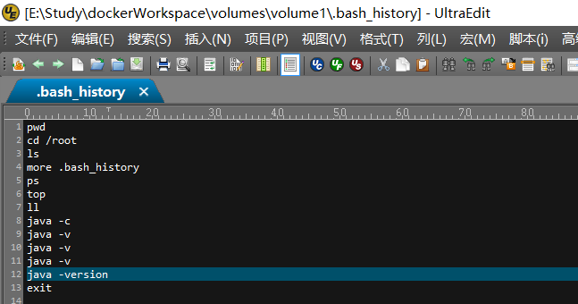

数据卷
数据卷 是一个可供一个或多个容器使用的特殊目录，它绕过 UFS，可以提供很多有用的特性：
- 数据卷可以在容器之间共享和重用
- 对数据卷 的修改会立马生效
- 对数据卷 的更新，不会影响镜像
- 数据卷 默认会一直存在，即使容器被删除
创建一个数据卷
1 | >docker volume create volume-1 |
启动一个挂载数据卷的容器
docker run 命令的时候，使用 –mount 标记来将 数据卷 挂载到容器里。在一次docker run 中可以挂载多个 数据卷 。
1
>docker run -dit --name myjdk8 --mount source=volume-1,target=/webapp jdk8:v1
查看容器当中数据卷的具体信息
1 | >docker inspect myjdk8 |
数据卷的信息在”Mounts”里边：
1
2
3
4
5
6
7"Mounts": [
{
"Type": "volume",
"Source": "volume-1",
"Target": "/webapp"
}
]
删除数据卷
1 | >docker volume rm volume-1 |
数据卷设计的是用来存放数据的，并不会随着容器的删除而删除，有点类似于Linux里边的mount操作，如果想在删除容器的时候顺带删除数据卷，可以使用docker rm -v。
无主的数据卷可能会占据很多空间，要清理请使用以下命令：
1 | >docker volume prune |
挂载主机目录
挂载一个主机目录作为数据卷
加载主机的 E:\Study\dockerWorkspace\volumes\volume1 目录到容器的 /opt/webapp 目录,此功能可以在测试的时候发挥作用，比如我们可以在source下边添加文件，依次来判定容器是否工作。
PS： –mount 参数时如果本地目录不存在，Docker 会报错
1
2
3
4
5
6
7
8
9
10
11
12
13
14
15
16
17
18
19
20
21
22
23
24
25
26
27
28
29
30
31
32
33
34
35
36
37
38
39
40
41
42
43
44
45
46
47
48
49
50
51
52
53
54
55
56
57
58
59
60
61
62
63
64
65
66
67
68
69
70
71
72
73
74
75
76
77
78
79
80
81
82
83
84
85
86
87
88
89
90
91
92
93
94
95
96
97
98
99
100
101
102
103
104
105
106
107
108
109
110
111
112
113
114
115
116
117
118
119
120
121
122
123
124
125
126
127
128
129
130
131
132
133
134
135
136
137
138
139
140
141
142
143
144
145
146
147
148
149
150
151
152
153
154
155
156
157
158
159
160
161
162
163
164
165
166
167
168
169
170
171
172
173
174
175
176
177
178
179
180
181
182
183
184
185
186
187
188
189
190
191
192
193
194
195
196
197
198
199
200
201
202
203
204
205
206
207
208
209
210
211
212
213
214
215
216
217
218
219
220
221
222
223
224>docker run -dit --name myjdk8 --mount type=bind,source=E:\Study\dockerWorkspace\volumes\volume1,target=/webapp jdk8:v1
#查看容器里边的挂载目录的信息
>>docker inspect myjdk8
[
{
"Id": "c28039a147a1ae4210e6cdf5491a56bb9dae25ca11c6ae2e91c9f55075d1ba5c",
"Created": "2018-11-24T08:55:43.3658908Z",
"Path": "/bin/bash",
"Args": [],
"State": {
"Status": "running",
"Running": true,
"Paused": false,
"Restarting": false,
"OOMKilled": false,
"Dead": false,
"Pid": 4170,
"ExitCode": 0,
"Error": "",
"StartedAt": "2018-11-24T08:55:45.2437582Z",
"FinishedAt": "0001-01-01T00:00:00Z"
},
"Image": "sha256:a70ba00548f32c4d0152cb12e9aafdc419fc5bbb14744780bdfffb11f074ec03",
"ResolvConfPath": "/var/lib/docker/containers/c28039a147a1ae4210e6cdf5491a56bb9dae25ca11c6ae2e91c9f55075d1ba5c/resolv.conf",
"HostnamePath": "/var/lib/docker/containers/c28039a147a1ae4210e6cdf5491a56bb9dae25ca11c6ae2e91c9f55075d1ba5c/hostname",
"HostsPath": "/var/lib/docker/containers/c28039a147a1ae4210e6cdf5491a56bb9dae25ca11c6ae2e91c9f55075d1ba5c/hosts",
"LogPath": "/var/lib/docker/containers/c28039a147a1ae4210e6cdf5491a56bb9dae25ca11c6ae2e91c9f55075d1ba5c/c28039a147a1ae4210e6cdf5491a56bb9dae25ca11c6ae2e91c9f55075d1ba5c-json.log",
"Name": "/myjdk8",
"RestartCount": 0,
"Driver": "overlay2",
"Platform": "linux",
"MountLabel": "",
"ProcessLabel": "",
"AppArmorProfile": "",
"ExecIDs": null,
"HostConfig": {
"Binds": null,
"ContainerIDFile": "",
"LogConfig": {
"Type": "json-file",
"Config": {}
},
"NetworkMode": "default",
"PortBindings": {},
"RestartPolicy": {
"Name": "no",
"MaximumRetryCount": 0
},
"AutoRemove": false,
"VolumeDriver": "",
"VolumesFrom": null,
"CapAdd": null,
"CapDrop": null,
"Dns": [],
"DnsOptions": [],
"DnsSearch": [],
"ExtraHosts": null,
"GroupAdd": null,
"IpcMode": "shareable",
"Cgroup": "",
"Links": null,
"OomScoreAdj": 0,
"PidMode": "",
"Privileged": false,
"PublishAllPorts": false,
"ReadonlyRootfs": false,
"SecurityOpt": null,
"UTSMode": "",
"UsernsMode": "",
"ShmSize": 67108864,
"Runtime": "runc",
"ConsoleSize": [
50,
189
],
"Isolation": "",
"CpuShares": 0,
"Memory": 0,
"NanoCpus": 0,
"CgroupParent": "",
"BlkioWeight": 0,
"BlkioWeightDevice": [],
"BlkioDeviceReadBps": null,
"BlkioDeviceWriteBps": null,
"BlkioDeviceReadIOps": null,
"BlkioDeviceWriteIOps": null,
"CpuPeriod": 0,
"CpuQuota": 0,
"CpuRealtimePeriod": 0,
"CpuRealtimeRuntime": 0,
"CpusetCpus": "",
"CpusetMems": "",
"Devices": [],
"DeviceCgroupRules": null,
"DiskQuota": 0,
"KernelMemory": 0,
"MemoryReservation": 0,
"MemorySwap": 0,
"MemorySwappiness": null,
"OomKillDisable": false,
"PidsLimit": 0,
"Ulimits": null,
"CpuCount": 0,
"CpuPercent": 0,
"IOMaximumIOps": 0,
"IOMaximumBandwidth": 0,
"Mounts": [
{
"Type": "bind",
"Source": "/host_mnt/e/Study/dockerWorkspace/volumes/volume1",
"Target": "/webapp"
}
],
"MaskedPaths": [
"/proc/acpi",
"/proc/kcore",
"/proc/keys",
"/proc/latency_stats",
"/proc/timer_list",
"/proc/timer_stats",
"/proc/sched_debug",
"/proc/scsi",
"/sys/firmware"
],
"ReadonlyPaths": [
"/proc/asound",
"/proc/bus",
"/proc/fs",
"/proc/irq",
"/proc/sys",
"/proc/sysrq-trigger"
]
},
"GraphDriver": {
"Data": {
"LowerDir": "/var/lib/docker/overlay2/2a1d010cd96bb1307be40e1b5e23a0b2f9ecbbcb124b4b8abfba963a0b37bf72-init/diff:/var/lib/docker/overlay2/2796cd7903fb6c509b276acb83505d05b1d685e010dc32557fe6baa06160e0a3/diff:/var/lib/docker/overlay2/15b4eabde2002d7fa67849c36b175b93827b911465b6cc8021e47f467ec2cca3/diff:/var/lib/docker/overlay2/9a004f009ec50069f1f7a8985bf40a256eda15b48402ccbefb6831ae52d2bbb8/diff:/var/lib/docker/overlay2/1d31c352fff2c856f6f208be8c9448ecc30447edcfacb10fd73e4d62ebef989d/diff",
"MergedDir": "/var/lib/docker/overlay2/2a1d010cd96bb1307be40e1b5e23a0b2f9ecbbcb124b4b8abfba963a0b37bf72/merged",
"UpperDir": "/var/lib/docker/overlay2/2a1d010cd96bb1307be40e1b5e23a0b2f9ecbbcb124b4b8abfba963a0b37bf72/diff",
"WorkDir": "/var/lib/docker/overlay2/2a1d010cd96bb1307be40e1b5e23a0b2f9ecbbcb124b4b8abfba963a0b37bf72/work"
},
"Name": "overlay2"
},
"Mounts": [
{
"Type": "bind",
"Source": "/host_mnt/e/Study/dockerWorkspace/volumes/volume1",
"Destination": "/webapp",
"Mode": "",
"RW": true,
"Propagation": "rprivate"
}
],
"Config": {
"Hostname": "c28039a147a1",
"Domainname": "",
"User": "",
"AttachStdin": false,
"AttachStdout": false,
"AttachStderr": false,
"Tty": true,
"OpenStdin": true,
"StdinOnce": false,
"Env": [
"PATH=/usr/local/sbin:/usr/local/bin:/usr/sbin:/usr/bin:/sbin:/bin:/bin:/bin",
"JAVA_HOME=/usr/local/jdk1.8.0_151",
"MAVEN_HOME=/usr/local/apache-maven-3.6.0",
"MAVEN_CONFIG=/root/.m2",
"CLASSPATH=/lib/dt.jar:/lib/tools.jar"
],
"Cmd": [
"/bin/bash"
],
"ArgsEscaped": true,
"Image": "jdk8:v1",
"Volumes": null,
"WorkingDir": "",
"Entrypoint": null,
"OnBuild": null,
"Labels": {
"org.label-schema.build-date": "20181006",
"org.label-schema.license": "GPLv2",
"org.label-schema.name": "CentOS Base Image",
"org.label-schema.schema-version": "1.0",
"org.label-schema.vendor": "CentOS"
}
},
"NetworkSettings": {
"Bridge": "",
"SandboxID": "d20c63fb42c257b9e1313b637d80d8c2841f4bec9d54c5941e2381a6f537b106",
"HairpinMode": false,
"LinkLocalIPv6Address": "",
"LinkLocalIPv6PrefixLen": 0,
"Ports": {},
"SandboxKey": "/var/run/docker/netns/d20c63fb42c2",
"SecondaryIPAddresses": null,
"SecondaryIPv6Addresses": null,
"EndpointID": "89f640f036d7de25ad93e120e7352da9c99f254e82a4384972c43c6803f6c713",
"Gateway": "172.17.0.1",
"GlobalIPv6Address": "",
"GlobalIPv6PrefixLen": 0,
"IPAddress": "172.17.0.2",
"IPPrefixLen": 16,
"IPv6Gateway": "",
"MacAddress": "02:42:ac:11:00:02",
"Networks": {
"bridge": {
"IPAMConfig": null,
"Links": null,
"Aliases": null,
"NetworkID": "dac87c8ed4bd04308689a40796a465fa0fe175a30e82a0907a40c76405ba7c88",
"EndpointID": "89f640f036d7de25ad93e120e7352da9c99f254e82a4384972c43c6803f6c713",
"Gateway": "172.17.0.1",
"IPAddress": "172.17.0.2",
"IPPrefixLen": 16,
"IPv6Gateway": "",
"GlobalIPv6Address": "",
"GlobalIPv6PrefixLen": 0,
"MacAddress": "02:42:ac:11:00:02",
"DriverOpts": null
}
}
}
}
]
挂载信息：
1
2
3
4
5
6
7
8
9
10"Mounts": [
{
"Type": "bind",
"Source": "/host_mnt/e/Study/dockerWorkspace/volumes/volume1",
"Destination": "/webapp",
"Mode": "",
"RW": true,
"Propagation": "rprivate"
}
]
Docker 挂载主机目录的默认权限是 读写 ，用户也可以通过增加 readonly 指定为 只读 。
1
docker run -dit --name myjdk8 --mount type=bind,source=E:\Study\dockerWorkspace\volumes\volume1,target=/webapp readonly jdk8:v1
此时如果向/webapp写操作，都会异常。
挂载一个本地主机文件作为数据卷
–mount 标记也可以从主机挂载单个文件到容器中
记录在容器输入过的命令
1 | >docker run -dit --name myjdk8 --mount type=bind,source=E:\Study\dockerWorkspace\volumes\volume1\.bash_history,target=/root/.bash_history jdk8:v1 |
我们在容器里边敲了很多命令，
那么此时我们可以到宿主机的E:\Study\dockerWorkspace\volumes\volume1.bash_history里边看一下，
我们敲得命令的记录：
